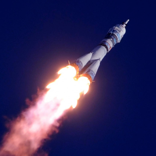
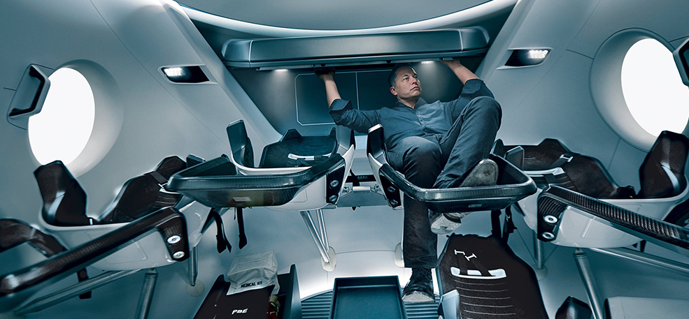
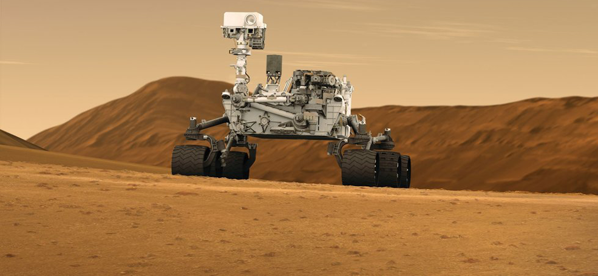
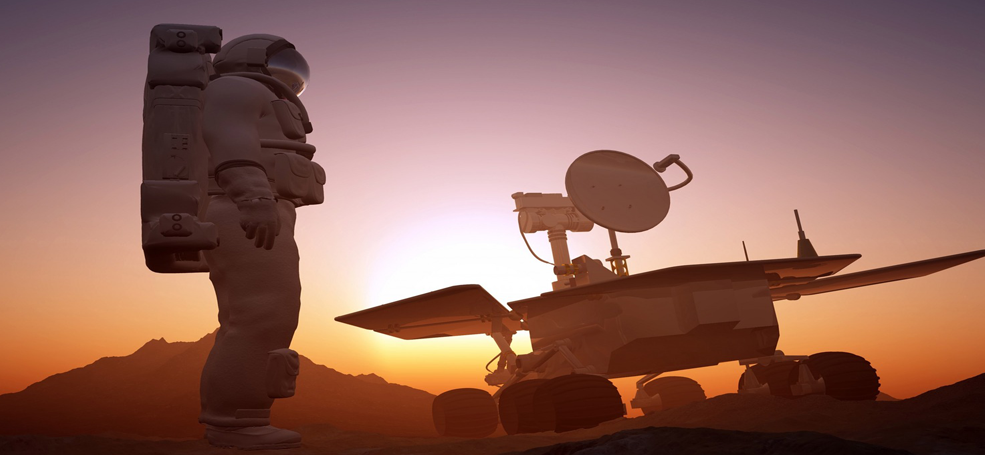
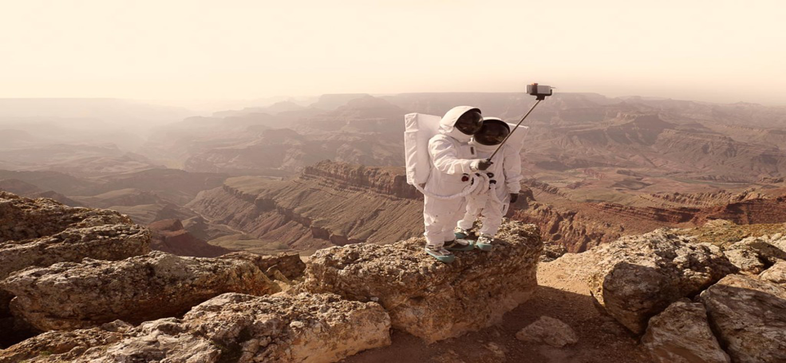

<!DOCTYPE html>
<html>
<head>
    <meta charset="utf-8" />
    <!-- <meta http-equiv="X-UA-Compatible" content="IE=edge"> -->
    <title>Page Title</title>
    <meta name="viewport" content="width=device-width, initial-scale=1">
    <link rel="stylesheet" href="fonts/stylesheet.css">
    <link rel="stylesheet" type="text/css" media="screen" href="style/main.css" />
    <link rel="stylesheet" media=" screen and (min-width:601px) and (max-width:768px)" href="style/768-601.css">
    <link rel="stylesheet" type="text/css" media="screen and (min-width:481px) and (max-width:601px)" href="style/600-481.css" />
    <link rel="stylesheet" type="text/css" media="screen and (min-width:321px) and (max-width:481px)" href="style/480-321.css" />
    <link rel="stylesheet" type="text/css" media="screen and (max-width:320px)" href="style/320.css" />
    <script src=""></script>
</head>
<body>
    <div class="background">
        <div class="menu">
            <nav class="menu-nav">
                <a href="#fact" class="menu-nav-item">Факты</a>
                <a href="#idea" class="menu-nav-item">От идеи до реализации</a>
                <a href="#life" class="menu-nav-item">Организация жизини</a>
                <a href="#footer" class="menu-nav-item">Обратная связь</a>
            </nav>
        </div>
        <div class="conteiner header">
            <header class="header-header">
                <div class="header-header-logo">
                    <picture>
                        <source class="i_320" media="(max-width:320px)" srcset="img/1block/logo_320.png">
                            
                    </picture>
                    <h4>PANTEON</h4>
                    <span>project</span>
                </div>
                <div class="header-header-burger">Меню
                        <a  class="menu-btn">
                                 <span></span>
                        </a>
                </div>
            </header> 
            <div class="header-main">
                <ul class="header-main-panteon">
                   <li>П</li>
                   <li>А</li>
                   <li>Н</li>
                   <li>Т</li>
                   <li>Е</li>
                   <li>О</li>
                   <li>Н</li>
                </ul>
                <ul class="header-main-olimp">
                    <li>О</li>
                    <li>Л</li>
                    <li>И</li>
                    <li>М</li>
                    <li>П</li>
                </ul>
                <h1><span> ПУНКТ НАЗНАЧЕНИЯ:</span> <span>ПАНТЕОН,</span> <span>МАРС</span></h1>
                <iframe width="570" height="280" src="https://www.youtube.com/embed/IcfrZJ-0Yrw?controls=0?modestbranding=1" frameborder="0"  autoplay="1" allowfullscreen></iframe>
            </div>
            <div class="header-button">
                <span></span>
            </div>
        </div>
    </div>
        <!-- ХЕДЕР КОНЕЦ -->
        <a name="fact"></a>
    <div class="RememberAll">
        <div class="RememberAll-header">
            <div class="RememberAll-header-content conteiner">
                <div class="RememberAll-header-content-block">
                    <h4>4</h4>
                    <p>Четвёртая планета по удалённоси от солнца</p>
                </div>
                <div class="RememberAll-header-content-block">
                    <h4>7</h4>
                    <p>По размерам Солнечной системы</p>
                </div>
                <div class="RememberAll-header-content-block">
                    <h4>10,7%</h4>
                    <p>массы Земли (ваш вес будет в 3 раза меньше, чем на Земле)</p>
                </div>
                <div class="RememberAll-header-content-block">
                    <h4>2</h4>
                    <p>спутника вместо Луны (как картошка,только больше)</p>
                </div>
                <div class="RememberAll-header-content-block">
                    <h4>21 км</h4>
                    <p>Высота самой высокой горы Марса</p>
                </div>
                <div class="RememberAll-header-content-block">
                    <h4>+20</h4>
                    <p>максимальня темпереатура на поверхности</p>
                </div>
            </div>
        </div>
        <div class="RememberAll-content conteiner">
            <h2>Марс.Вспомнить всё</h2>
            <div class="RememberAll-content-content">
                <div class="RememberAll-content-content-block">
                    <h3>Что такое Марс</h3>
                    <p>Планета солнечной системы,названа в честь Марса -древнеримского бога войны.
                       Иногда Марс называют "красной планетой" из-за красного оттенка поверхности,
                       придаваемого ей оксидом железа.
                    </p>
                    <p>Особенности планеты-наличие слабой атмосферы состоящей в основном из углекислого
                        газа, времена года, пылевые бури, сильная эрозия почвы
                    </p>
                </div>
                <div class="RememberAll-content-content-block">
                    <h3>Что это как туда доехать?</h3>
                    <p>Растояние до Марса-почти 56 миллионов километров.Чтобы преодалеть таокое 
                        расстояние, нужно лететь на межпланетном корабле 7-8 месяцев.
                    </p>
                </div>
            </div>
        </div>
    </div>    
    <!-- Ремемер Конец -->
    <a name="idea"></a>
    <div class="idea conteiner clearfix">
        <h2>От идеи до реализации</h2>
        <h3>Илон Маск.Гений или безумец?</h3>
        <p>Канадско-американский инженер, предприниматель, изобретатель и инвестор; миллиардер.
            Основатель компаний SpaceX и X.com, позже переименованной в PayPal.
            Планирует потратить большую часть накоплений на реализацию своей мечты,
            а также мечты многих тысяч романтиков, писателей, учёных: создать внеземную цивилизацию.</p>
        <picture>
            <source media="(max-width:768px)" srcset="img/3block/Ilon_768_320.png">
            
        </picture>
        <blockquote><p>Мы должны сделать эту мечту реальностью за наше время жизни. Любой человек, 
                который пожелает отправиться на Марс, должен иметь такую возможность</p></blockquote>
                
                <p> — заявил Маск на Международной астронавтической конференции в Гвадалахаре
                    (Мексика). Он обосновал необходимость своего проекта вопросом выживания
                    человечества, которое для своего сохранения должно стать «космическим видом».
                </p>
                <p>Илон поставил перед собой цель: скоратить стоимость вывода кораблей 
                    в космос в 10 раз, что станет первым шагом для человечества в освоении Марса.
                </p>
    </div>
    <div class="idea1">
        <div class="idea1-background">
            <picture>
                <source media="(min-width:321px) and (max-width:768px)" srcset="img/3block/Rocket_768.png">
                <source media="(max-width:320px)" srcset="img/3block/Rocket_320.png">
                
            </picture>
            <div class="idea1-background-content">
                <h3>Стоимость перелёта</h3>
                <p>Высадка двоих астронавтов на Луну обошлась США в 20 млрд. долларов. 
                Маск стремится сократить эту цифру в 20 000 раз, что составит 500 000 долларов на человека.</p>
            </div>
            <div class="idea1-background-flex">
                <p>$500 k</p>
                <p class="idea1-background-content-mars">и ты на Марсе</p>
                <div class="idea1-background-flex-button">
                    я готов лететь 
                </div>
            </div>
        </div>
    </div>
    <!--Конец идеи -->
    <a name="life"></a>
    <div class="life conteiner clearfix">
        <div class="life-modal">
            <div class="life-modal-content">
                <span id="exit"></span>
                <p>Я модальное окно закрой меня</p>
            </div>
        </div>
        <h2>Организация жизни в колонии</h2>
        
        <div class="life-dotsWrap">
            <div  id ="first"class="life-dotsWrap-dot life-dots_active">
                    <a href="#"> </a>
            </div>
            <div class="life-dotsWrap-img life-dotsWrap-img-start">
                    <div class="dotback dotsWrap-background-1 dotsWrap-background_active"></div>
            </div>
            <div class="life-dotsWrap-dot">
                    <a href="#"> </a>
            </div>
            <div class="life-dotsWrap-img">
                    <div class="dotback dotsWrap-background-2"></div>
            </div>
            <div class="life-dotsWrap-dot">
                    <a href="#"> </a>
            </div>
            <div class="life-dotsWrap-img">
                    <div class="dotback dotsWrap-background-3"></div>
            </div>
            <div class="life-dotsWrap-dot">
                    <a href="#"> </a>
            </div>
            <div class="life-dotsWrap-img">
                    <div class="dotback dotsWrap-background-4"></div>
            </div>
            <div id ="last" class="life-dotsWrap-dot">
                    <a href="#"> </a>
            </div>
            <div class="life-dotsWrap-img">
                    <div class="dotback dotsWrap-background-5"></div>
            </div>
        </div>
        <div class="life-slider-item">
            <picture>
                <source media="(min-width:321px) and (max-width:768px)" srcset="img/4block/Poj_768.png">
                <source media="(max-width:320px)" srcset="img/4block/Poj_320.png">
                
            </picture>
            <h3>Проживание</h3>
            <p>В основе жилых помещений лежат надувные компоненты — спальня,
                рабочая зона, гостиная, парник для выращивания зелени — 50 м2 на
                человека. Благодаря этим компонентам, колонисты смогут принять душ,
                приготовить свежую пищу, носить обычную одежду.
                Весь комплекс соединен сетью ходов.</p>
        </div>
        <div class="life-slider-item">
                <picture>
                    <source media="(min-width:321px) and (max-width:768px)" srcset="img/4block/Robot_768.png">
                    <source media="(max-width:320px)" srcset="img/4block/Robot_320.png">
                    
                </picture>
                <h3>Роботы</h3>
                <p>Вы будите трудиться хоть и заплатите большую плату, всё это 
                    для того что бы выжить и иследовать новую планету.Но справиться с этим помогут вам роботы.
                </p>
        </div>
        <div class="life-slider-item">
                <picture>
                    <source media="(min-width:321px) and (max-width:768px)" srcset="img/4block/Science_768.png">
                    <source media="(max-width:320px)" srcset="img/4block/Science_320.png">
                    
                </picture>
                    <h3>Наука</h3>
                    <p>Вся ваша задача будет заключаться в отом что-бы наука смогла сделать 
                        большой прорыв.Наука и многие учёные будут вам благодарны за то что вы 
                        зделаете на "красной планете".Разве это не прекрасно зделать что-то великое? 
                    </p>
        </div>
        <div class="life-slider-item">
                <picture>
                    <source media="(min-width:321px) and (max-width:768px)" srcset="img/4block/Photo_768.png">
                    <source media="(max-width:320px)" srcset="img/4block/Photo_320.png">
                    
                </picture>
                    <h3>Фото</h3>
                    <p>Ну и как же без него.Когда вы улетите с "красной планеты"
                        вы  обязательно оставите массу воспоминаний, которые вы будите 
                        вспоминать всю жизнь,а остануться они не только в памяти но и на 
                        фото плёнке что бы показать своим детям. 
                    </p>
        </div>
        <div class="life-slider-item">
                <picture>
                    <source media="(min-width:321px) and (max-width:768px)" srcset="img/4block/Study_768.png">
                    <source media="(max-width:320px)" srcset="img/4block/Study_320.png">
                    
                </picture>
                    <h3>Исследования</h3>
                    <p>Вам предстоит иследовать места где еще не ступала нога человека.
                        Такое путешествие по не изведанам местам возможно только на Марсе.
                        Эсли мы вас заинтриговали то жмите на конпку снизу.
                    </p>
        </div>
        <div class="life-button">
            <a >Подробнее</a>
        </div>
    </div>
    <!-- Конец Лайфа -->
    <a name="footer"></a>
    <footer class="footer">
        <div class="footer-conteiner conteiner">       
            <h2>Деньги приготовил. Когда вылетаем?</h2>
            <div class="footer-conteiner-main">
                
                    <form action="" class="footer-conteiner-main-form">
                        <div class="footer-conteiner-main-form-wrap">
                            <h4>Будь в курсе новостей</h4>
                            <div class="footer-conteiner-main-form-wrap-group">      
                                    <input type="text" required>
                                    <span class="bar"></span>
                                    <label>Имя</label>
                                 </div>
                            <div class="footer-conteiner-main-form-wrap-group">      
                                    <input type="text" required>
                                    <span class="bar"></span>
                                    <label>Email</label>
                                 </div>
                            <button class="footer-conteiner-main-form-wrap-button">Подписаться</button>
                        </div>
                    </form>
                    <div class="footer-conteiner-main-content">
                        <p>Первый «частный» полёт на Марс осуществит в 2018 году в беспилотном варианте
                            корабль Dragon V2 с помощью тяжёлой ракеты Falcon Heavy.
                            После этого запланированы две миссии в 2020 году, как минимум одна в 2022-м и,
                            вероятно, пилотируемая миссия через два года с достижением Марса в 2025 году.
                        </p>
                        <p>Для всех желающих открыты курсы подготовки.</p>
                        <a href="https://ain.ua/2017/06/11/kak-stat-astronavtom-nasa/" target="_blank">Критерии отбора</a>
                    </div>
            </div>
            <div class="footer-conteiner-footer">
                    <div class="footer-conteiner-footer-logo clearfix">
                       <div class="footer-conteiner-footer-logo-logoImg"></div>
                       <div class="footer-conteiner-footer-logo-text">
                            <p>PANTEON</p>
                            <span>project</span>
                        </div>
                    </div>
                    <a class="footer-conteiner-footer-link">Подрбнее об проекте</a>
                    <div class="footer-conteiner-footer-social">
                        <a class="footer-conteiner-footer-social-vk" href="https://vk.com" target="_blank"></a>
                        <a class="footer-conteiner-footer-social-tw" href="https://twitter.com/?lang=ru" target="_blank"></a>
                        <a class="footer-conteiner-footer-social-fa" href="https://facebook.com" target="_blank"></a>
                        <a class="footer-conteiner-footer-social-you" href="https://www.youtube.com/" target="_blank"></a>
                    </div>
            </div>
            
            
        </div>
    </footer>
    <script src="https://code.jquery.com/jquery-3.3.1.min.js"></script>
    <script src="script/burger.js"></script>
</body>
</html>
